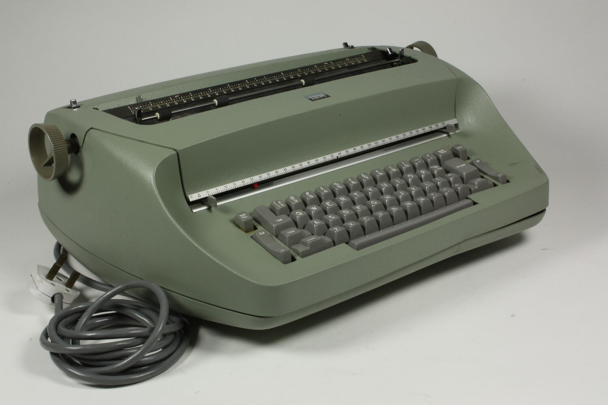
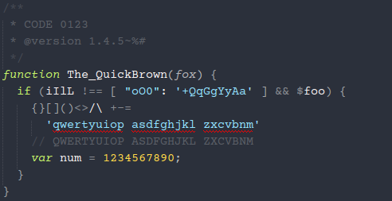

The Original Courier
Once, Courier was one of the most widespread typefaces to be used. Even now, modern variants of it such as Courier New and Courier Prime are still commonly used. However, it did not start out as a typeface for computers. Back in 1955, IBM commissioned designer Howard Kettler to design it for their typewriters. From the late 1800's up until computers began to be used, typewriters were the way people would have things written down on paper. In the 1900's, IBM was one of the biggest producers of these typewriters, having made the IBM Selectric, considered one of the most successful typewriters to be released. So, Courier was first designed to be used for typewriters, not for computers.
As for Howard Kettler, he was a designer who had been working with IBM since about 1952. Prior to this, he had worked in newspapers and printing. The typeface was originally going to be named 'Messenger'. In the end, the name 'Courier' came about as a synonym for the word messenger, seen by Kettler as a more sophisticated alternative.
When Courier was designed, IBM chose not to have the design trademarked. As a result of this, it quickly began to see widespread use across other typewriters outside of IBM's. The wide letters allowed the font to be easily readable, and this convenient characteristic of the typeface was a part of why many other companies at the time decided to use this typeface in particular.
It was also around this time that the format for screenplays was being developed. As Courier was one of the biggest fonts to be used for a typewriter, which is what these screenplays were being written with, it became the standard font to be used. The readability and monospaced characters of Courier also applied in this case as a reason to use this font for writing screenplays. Even after computers became more commonly used, people continued to keep screenplays looking like they were made with typewriters, resulting in Courier also staying as the default typeface for screenplays to this day.
Courier New and the Transition to Computers
When IBM began producing their line of electric typewriters, the IBM Selectric, they had designer Adrian Frutiger remake the Courier font for it. The result was Courier New, with a noticably thinner line weight. Throughout the 80's and 90's, computers started to be used instead, and Courier New became a usable font made to resemble the text of a typewriter there, too. The earliest version of this font made available for computers was on Windows 3.1.
Aside from Courier New, Fruitger was responsible for a number of other fonts, including Frutiger and Univers.
Courier New, specifically in 12 points, was one of the most common fonts to be used for decades. It was the standard font used by the US State Department. Eventually, in February of 2004, the State Department announced to change from Courier New to Times New Roman in 14pt, citing its more “modern” look- a signifier of people moving on from the typewriters that the font was originally made for. However, for places like Hollywood and the area of scriptwriting, the font remained largely the same.
Use in the Modern Day
In 2013, author and screenwriter John August released the typeface Courier Prime, which he had commissioned from font designer Alan Dague-Greene. As a screenwriter, his intention was to have an improved Courier font for screenplays. It was kept with similar spacings to previous iterations in order to keep it as one minute per page. However, the numerous optimisations that were made were also beneficial to the font for general use as well.
Some of the differences between Prime and New included an actual italics font rather than simply slanted characters, thicker text weight and being made with higher resolutions in mind. Although made primarily with screenwriters in mind, the font is freely available, including in places like Google Fonts, making it easily accessible to all.
Although the names of the people who create these typefaces are not as well known as their creations, they are still remembered. For example, searching up Howard Kettler's name in Google will yield an easter egg where the font for the page will be switched to Courier New.
Monospace fonts still get plenty of use in the modern day. They still see use as a font for screenwriting, and Courier fonts in particular are still considered the standard. Additionally, they are also used for displaying code for its readability and how characters are able to line up, but also as different characters can look more visually distinct. As Courier continues to be one of the most common monospaced fonts, it is often used for this purpose as well.